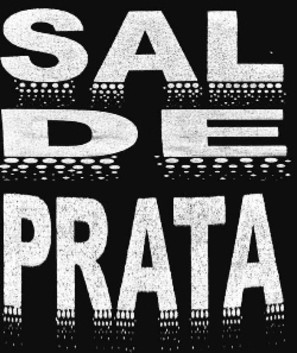

SAL DE PRATA em fase de finalização
Filmado em seis semanas, entre 29 de julho e 8 de setembro, o longa-metragem SAL DE PRATA - dirigido por Carlos Gerbase, em co-produção da Casa de Cinema de Porto Alegre com a Columbia Puctures - está, neste momento em fase de finalização, que compreende a montagem das imagens e diálogos, edição de som e produção da trilha musical.
O montador é Giba Assis Brasil (TOLERÂNCIA, O HOMEM QUE COPIAVA, ILHA DAS FLORES, DEUS EX-MACHINA e muitos outros). O seu assistente de montagem é Alfredo Barros, respeitado em todo País pela comunidade de editores de Final Cut Pro, graças ao conhecimento que tem de todos os detalhes do software utilizado pela Casa de Cinema desde 2000.
Enquanto Giba e Alfredo se concentram na ilha de edição, o maestro Tiago Flores, que fará a Direção Musical, escolhe, ao lado do diretor Carlos Gerbase, os temas musicais da trilha, que terá como base composições românticas do século 19. SAL DE PRATA, portanto, terá boas doses de Tchaikowsky, Dvorak, Schubert, Mendelssohn, Nielsen, Grieg e Elgar. Para contrabalançar, já está confirmada a inclusão de "Fruto proibido", rock clássico de Rita Lee, lançado em 1972, em sua versão original. A trilha orquestral será gravada em Porto Alegre, sob a regência do maestro Tiago Flores, que promete uma altíssima qualidade sonora e de interpretação em sua estréia no cinema.
SAL DE PRATA deverá ser lançado no primeiro semestre de 2005. No elenco, os destaques são Maria Fernanda Cândido, Camila Pitanga, Bruno Garcia e Marcos Breda, todos nomes bem conhecidos da TV e do cinema brasileiros. Mas também há a presença dos cada vez mais reconhecidos talentos do Rio Grande Sul, como Nelson Diniz (de TOLERÂNCIA), Janaína Kremer (do curta O SANDUÍCHE), Júlio Andrade (de O HOMEM QUE COPIAVA) e Júlia Barth (de HOUVE UMA VEZ DOIS VERÕES).
A HISTÓRIA
SAL DE PRATA conta a história de uma grande transformação na vida de Cátia (Maria Fernanda Cândido). No início do filme, ela é uma bem-sucedida economista, que ganha a vida no mercado financeiro e está apaixonada por Veronese (Marcos Breda), um mal-sucedido cineasta, que ganha a vida com uma pequena loja de revelações fotográficas e faz curtas quando consegue. Eles se amam, mas mantêm suas carreiras profissionais bem separadas: assim como Veronese não se interessa pelas transações financeiras de Cátia, esta não faz muita questão de se relacionar com o universo cinematográfico.
A inesperada morte de Veronese, contudo, força Cátia a penetrar no mundo do cinema - que para ela é misterioso e cheio de armadilhas - e tentar conhecer melhor a vida e a obra do homem que tanto amou. Nesta jornada, Cátia tenta descobrir, antes de mais nada, se ele não a estava traindo com Cassandra (Camila Pitanga), a bela e sensual atriz dos últimos filmes de Veronese e objeto de seu ciúme há vários anos.
Para isso, terá que se relacionar com uma turma que quase sempre evitou, formada por Valdo (Bruno Garcia), um cineasta de sucesso; Mirabela (Janaína Kremer), produtora; João Baptista (Nelson Diniz), publicitário e diretor; e Holmes (Júlio Andrade), pé-rapado e cineasta "alternativo". SAL DE PRATA acompanha a trajetória de Cátia, observando, principalmente, a sua dificuldade em distinguir ficção e realidade. Como diz Umberto Eco, o cinema é a mais poderosa máquina de contar mentiras já criada pela humanidade, e Cátia terá que compreender como funciona essa máquina para dar um novo significado para sua vida.
O ELENCO PRINCIPAL
Maria Fernanda Cândido é Cátia, uma competente economista, que terá sua vida radicalmente alterada, à medida que inicia uma jornada pelo mundo da arte e do cinema.
Maria Fernanda foi protagonista das novelas "Terra Nostra" e "Esperança", da minissérie "Aquarela do Brasil" e do filme "Dom", pelo qual recebeu o prêmio de melhor atriz de longa-metragem do Festival de Cinema de Gramado, edição 2003. Nasceu em Londrina e mora em São Paulo. Estudou interpretação para cinema no Estúdio Fátima Toledo. Logo depois das filmagens de "Sal de prata", embarcou para Portugal, onde encenou com grande sucesso a peça “O envangelho segundo Jesus Cristo”, de José Saramago.
Camila Pitanga interpreta Cassandra, uma atriz talentosa que ainda não teve a chance de brilhar.
Camila participou das minisséries "A invenção do Brasil" (que depois virou filme) e "Porto dos Milagres", e da novela "Mulheres apaixonadas". Encerrou recentemente o giro nacional da peça "Arlequim Servidor de Dois Patrões", em Porto Alegre. No teatro, trabalhou com Hamilton Vaz Pereira em "A ira de Aquiles" e "Odisséia". Em 2002, atuou numa produção gaúcha para a Rede Globo, o episódio de "Brava Gente" entitulado "Meia encarnada dura de sangue", com produção da Casa de Cinema de Porto Alegre. Está terminando o curso de Artes Cênicas (habilitação em Teoria Teatral), na UNIRIO. Camila é carioca e mora no Rio de Janeiro.
Marcos Breda é Veronese, um diretor cinematográfico com uma carreira obscura, em que se destacam alguns curtas de tom erótico.
Breda é gaúcho, mas mora no Rio de Janeiro há muitos anos. Sua estréia no cinema foi no longa "Verdes anos" (dirigido por Carlos Gerbase, em 1983). Logo depois, foi protagonista do filme "Feliz Ano Velho". Atuou em diversas novelas e tem extenso currículo no teatro, onde tem sido dirigido pelo também gaúcho Luis Artur Nunes. Atualmente pode ser visto na novela teen "Malhação".
Bruno Garcia é Valdo, um cineasta que acaba de realizar um longa de grande sucesso de público e de crítica.
Em "Lisbela e o prisioneiro", Bruno interpretou o falso carioca noivo da "mocinha". Em "Dom", fazia o suposto amante de Capitu. Bruno Garcia participou de várias novelas (a última foi "Kubanacam") e fez grande sucesso com a série "Sexo frágil". Já esteve no Rio Grande do Sul para participar de "O comprador de fazendas" (episódio da série Brava Gente), "Anchietanos" (episódio de "Comédias da vida privada") e da minissérie "Luna Caliente", todas produções da Casa de Cinema de Porto Alegre. No teatro, fez sucesso em "O burguês ridículo" e "A ver estrelas", de João Falcão. Bruno é pernambucano e mora no Rio de Janeiro.
MAITÊ PROENÇA faz pequena participação especial e afetiva como "Estrela do cinema brasileiro".
Maitê estrelou vários longas, entre eles "A dama do Cine Shangai" (de Guilherme de Almeida Prado) e TOLERÂNCIA (de Carlos Gerbase). Maitê também tem extenso currículo na TV, onde recentemente fez sucesso com a novela "Da cor do pecado". Outra faceta de Maitê, que tem cada vez mais destaque, é a de cronista, graças a seus textos na revista "Isto É". A participação especial de Maitê em "Sal de Prata" é uma homenagem de Carlos Gerbase e da Casa de Cinema de Porto Alegre e um reconhecimento dos gaúchos por tudo o que ela já fez pelo cinema nacional.
O DIRETOR
Carlos Gerbase nasceu em Porto Alegre, em 1959, e começou a fazer cinema em 1979, ainda na faculdade, usando a bitola super-8. Seus principais trabalhos de direção em cinema são: INVERNO (longa, super-8, 1983); VERDES ANOS (longa, 35mm, 1984); DEUS EX-MACHINA (curta, 35mm, 1995); TOLERÂNCIA (longa, 35mm, 2000). Com exceção de VERDES ANOS, em todos os seus filmes também é roteirista. Para a Rede Globo, escreveu MEMORIAL DE MARIA MOURA, ENGRAÇADINHA, MEMÓRIAS DE UM SARGENTO DE MILÍCIAS e LUNA CALIENTE, entre outros. É sócio da Casa de Cinema de Porto Alegre desde a sua fundação, em 1987.
Em sua carreira como cineasta, recebeu vários prêmios em festivais nacionais (Gramado, Brasília, Rio de Janeiro, São Luís) e internacionais (Miami/EUA, Santa Maria da Feira/Portugal e Havana/Cuba).
Gerbase formou-se em Jornalismo pela FAMECOS/PUCRS, em 1980, e concluiu o doutorado em Comunicação Social, também pela PUCRS, em 2003. É professor nos Cursos de Jornalismo e Publicidade da FAMECOS/PUC-RS desde 1981, onde também atua como Coordenador do Curso Superior Tecnológico de Produção Audiovisual - Cinema e Vídeo (TECCINE), da PUCRS.
Também é escritor e tem os seguintes livros publicados: COMIGO NÃO (Porto Alegre: L&PM, 1987), CONTOS CINEMATOGRÁFICOS (Porto Alegre: Artes e Ofícios, 2000), CINEMA: DIREÇÂO DE ATORES (Porto Alegre: Artes e Ofícios, 2003), IMPACTOS DAS TECNOLOGIAS DIGITAIS NA NARRATIVA CINEMATOGRÁFICA (Porto Alegre: EDIPUCRS, 2003).
SAL DE PRATA é seu décimo-quarto filme.
A PRODUTORA
A Casa de Cinema de Porto Alegre é a maior e mais atuante produtora de cinema do sul do País. Fundada em 1988, por doze cineastas, hoje tem seis sócios: Ana Luiza Azevedo, Carlos Gerbase, Giba Assis Brasil, Jorge Furtado, Luciana Tomasi e Nora Goulart.
Em 1989, o curta ILHA DAS FLORES, de Jorge Furtado, primeiro filme da recém criada produtora, conquista o Urso de Prata em Berlim e coloca a Casa de Cinema no cenário do cinema brasileiro e mundial. De lá para cá, são vários curtas, três longas (TOLERÂNCIA,HOUVE UMA VEZ DOIS VERÕES e O HOMEM QUE COPIAVA, todos co-produzidos e distribuídos pela Columbia) e diversos trabalhos para a televisão, incluindo a minissérie LUNA CALIENTE e as séries COMÉDIAS DA VIDA PRIVADA, BRAVA GENTE e CENA ABERTA.
